正文共计6000字左右
预计阅读时间8min
转载请在后台回复“授权”

二战期间，有人问希特勒，后世将如何看待德国对犹太人的种族屠杀。
希特勒不以为然地说：如今谁还会记得亚美尼亚人的悲伤呢？
确实，近150万亚美尼亚人被奥斯曼帝国残忍杀害的悲剧鲜有人知道。
这可是20世纪的第一场种族屠杀，也是基督教世界在现代所遭遇的一次最大迫害。
那段惨痛的历史不应该被人遗忘！
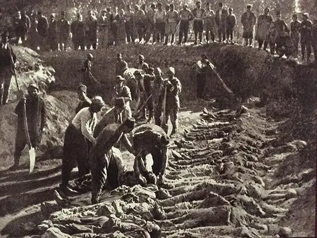
-01- 古老的信仰者
亚美尼亚，一个不为大众所知的小国。
面积只有2.98万平方公里，相当于4.7个上海。
人口只有327万人，相当于上海的七分之一。
从地图上来看，它夹在一群伊斯兰国家中间。
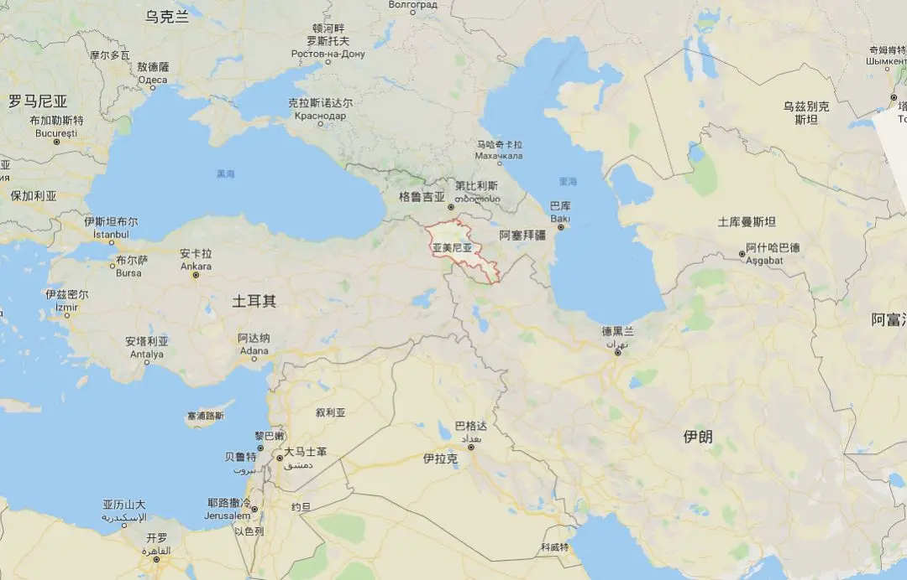
可亚美尼亚却是一个基督教国家。
事实上，亚美尼亚还是历史上第一个基督教国家，早在公约301年便将基督教定为国教。
这要比之后罗马帝国定基督教为国教早了近一个世纪。
正如基督教历史中呈现的普遍规律，亚美尼亚信仰的繁荣也是源自于殉道者的血。
起初，耶稣的使徒巴多罗买将信仰传播到亚美尼亚，他四处传讲福音，并带领很多人信主。
可这遭到当地其他宗教势力的仇恨，他们将巴多罗买抓捕，并带到亚美尼亚国王面前审讯。
国王向他发出警告“如果你不停止传讲耶稣，并且向我们的神献祭，将被处以最痛苦的死刑”。
巴多罗买坚定地回答“我不会向你们的假神献祭，我只传讲当向独一的真神敬拜。我宁愿用自己的血来见证所传的，而不愿我的良心和信仰受损！”。
这让国王大怒，最终巴多罗买被被倒钉在十字架上，并被斩首、剥皮。
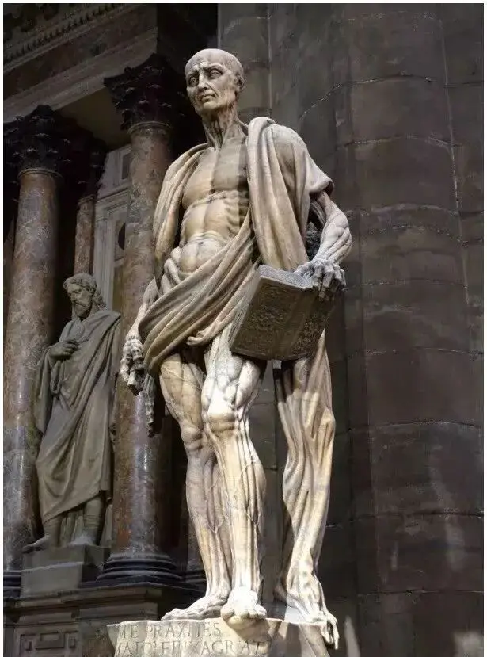
△现存于米兰大教堂
巴多罗买被杀后，基督教被亚美尼亚明令禁止打压，直至王室成员格列高利成为基督徒。
他因为信仰被国王梯里达底三世丢入一个深坑中，并被人用热水、热煤渣施以酷刑。
就这样，格列高利在这个充满污泥的深坑中活了13年。
直至国王梯里达底三世忽然昏迷不醒，国王的妹妹才想到了格列高利，请求他为国王祈祷。
果真，在格列高利的祈祷下，国王苏醒了。
于是梯里达底三世改宗基督教，并将基督教定为国教。
而格列高利之后创办了亚美尼亚使徒教会（也称格列高利教会）一直发展至今。
△亚美尼亚国徽，为一盾徽，由鹰和狮子护持。中间的小盾为诺亚方舟停于阿拉腊山山顶。代表着亚美尼亚的信仰，盾的其余部分分为四个象限，周围的四组图案代表历史上的4个王国：左下角为双鹰回头对视，象征阿尔塔什斯王朝；左上角为背负十字架的狮子，象征巴格拉提德王朝；右上角为双头鹰，象征阿萨息斯王朝；右下角为爪持十字架的狮子，象征鲁本王朝。四个象限象征国家悠久的历史。
亚美尼亚使徒教会在教义上坚持基督“一性说”，即认为基督的人性完全融入神性，因此只有一个真正的属性——神性。
而基督教在公元451年的大公会议上，将基督二性论定为正统，即基督有两种属性，既是完全的神，又是完全的人。
亚美尼亚使徒教会因为拒绝基督二性论而被排斥在基督教主流世界之外，一直以独立教会的形态存在。
这也是为何大多数基督徒并不了解亚美尼亚的原因。
而在亚美尼亚确定基督教为国教的1700年中，经历了罗马人、波斯人以及蒙古人的蹂躏，并不断遭到周边伊斯兰国家的压迫和杀戮。
被强夺土地，妇女及儿童被逼迫改变宗教信仰。纵火、强收保护费、强奸以及谋杀，这些就是亚美尼亚人时时刻刻要面对的处境。
可即便如此，亚美尼亚依旧顽强地保持着自己的信仰，这是相当不可思议的。
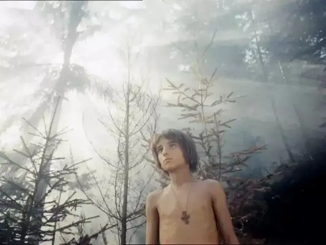
20世纪六十年代，独特的亚美尼亚民族因两部电影而受到了广泛的关注，他们就是被誉为诗电影的《被遗忘的祖先的影子》以及《石榴的颜色》。
怪才导演帕拉杰诺夫就是亚美尼亚人。
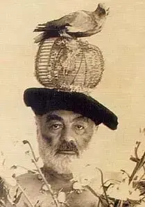
△谢尔盖·帕拉杰诺夫，前苏联著名电影导演，父母都是亚美尼亚人，从小就显示出对色彩的敏感和天神一般的绘画天赋。他的作品充满了奇异的幻想和大胆的色彩，如果他不是个电影导演，他依然会作为一位伟大的画家而不朽。
戈达尔曾这样评价他：
有一座电影的神庙，那里有光，有影像和现实，这座神庙的主人就是帕拉杰诺夫。”
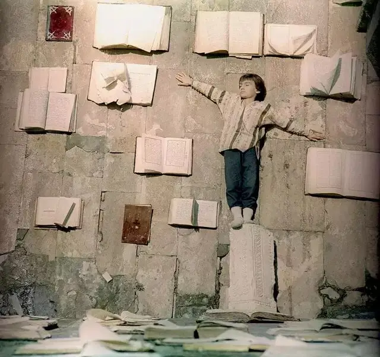
帕拉杰诺夫认为“中世纪亚美尼亚的诗是雕刻在宇宙历史中人类精神最辉煌的胜利”。
出于对民族文化的热爱，他以天才般的方式展现了亚美尼亚的文学、绘画、音乐、服饰以及古老的信仰。
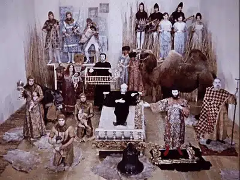
他的作品具有极强的绘画性和想象力，再加上古朴的宗教仪式以及大众对于亚美尼亚历史的无知，一般人很难看懂这些作品。
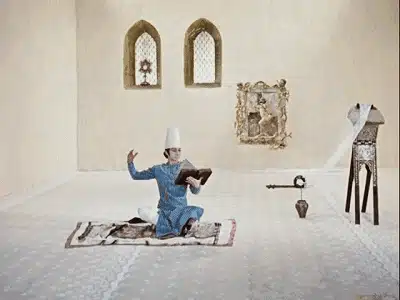
但这些丝毫不会影响作品本身的价值，就算把电影看为一帧帧的静态画面，这本“绘画册”也会美到让人窒息。
我在后台放了资源，大家可以挑战去看一下这些“特别”的诗电影。
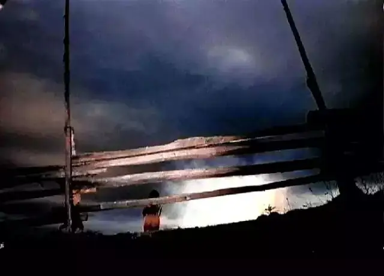
-02- 大屠杀
这样一个特别的民族却不断经历着苦难。
17世纪，亚美尼亚被奥斯曼土耳其侵占。
因为信仰基督教的缘故，亚美尼亚人被穆斯林占主导的奥斯曼帝国视为二等公民。
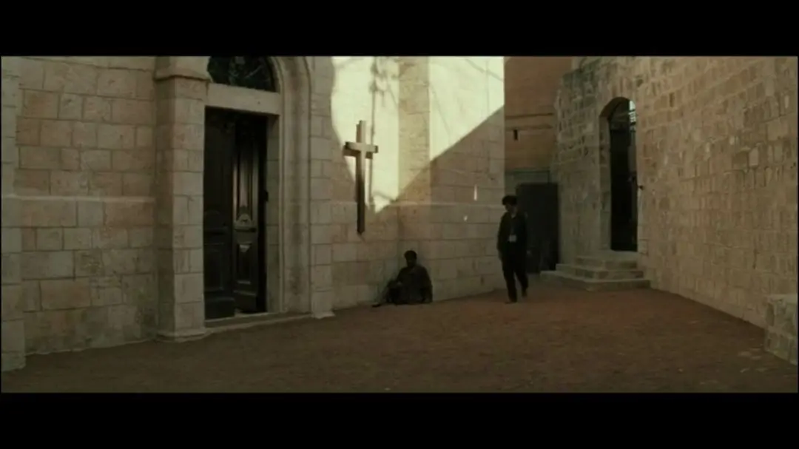
△《切肤之歌》剧照，金狮奖提名电影，后附资源
即他们有信仰基督教的权力，但却没有公平的公民待遇，比如亚美尼亚人被禁止携带武器或骑马，他们的建筑也不得高于穆斯林建筑，他们指控穆斯林的供词也不会被法庭采纳。
为此，亚美尼亚人一直要求奥斯曼政府改善他们的待遇，可他们的诉求往往被敷衍或直接无视。
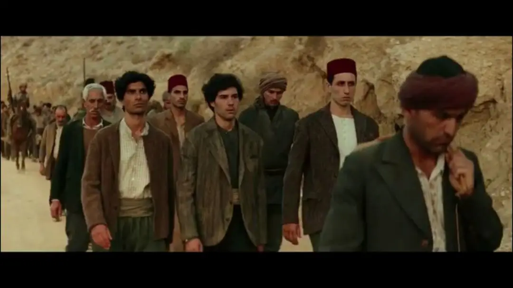
19世纪末，奥斯曼帝国衰微，并且与英、法、俄冲突不断。
亚美尼亚人寄希望于这些强国，屡次在国际会议上控诉自己在奥斯曼帝国遭遇的歧视和暴行，希望这些强国能够给奥斯曼政府施压来改善亚美尼亚人的待遇，甚至期望能够实现自治。
这些行为自然遭到穆斯林和当局的敌视。
在当时，亚美尼亚人被普遍看作可恨的“卖国贼”，不断遭到报复和诋毁。
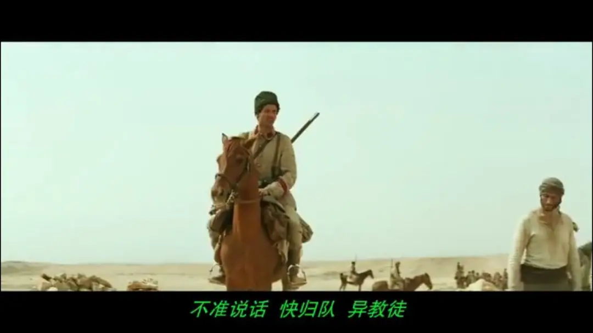
甚至，奥斯曼帝国在1890年创建了一支专门针对亚美尼亚人的准军事队伍「哈米迪耶」，他们的任务就是“随心所欲地处理亚美尼亚人”。
这支队伍在接下来的几年里对亚美尼亚人进行了残酷迫害和屠杀。
直至亚美尼亚人奋起反抗将其击溃。
1895年，亚美尼亚人提请列强关注奥斯曼帝国的这些迫害行为，列强随即谴责了奥斯曼政府的行为，并迫使当局签署了一连串改革条例。
可奥斯曼政府像流氓一样只有签字，没有落实。
当年10月，两千多个亚美尼亚人在首都集会请愿，要求政府落实改革条例。
没想到却遭到警察武力驱散，并随后发生了席卷亚美尼亚人的屠杀。
这次被称为哈米德大屠杀，死亡人数在10-30万人之间，堪比南京大屠杀。
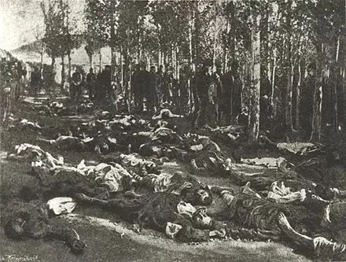
△1895年在埃尔祖鲁姆被屠殺的亚美尼亚人
这样的噩梦并没有结束，相反，亚美尼亚人将面临更可怕的魔鬼行径，几乎是灭顶之灾。
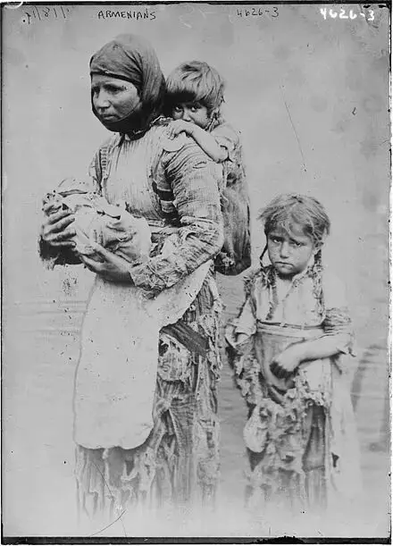
△在丈夫被杀后，一个亚美尼亚女人在1899年带孩子离开家园寻求援助
1914年，奥斯曼帝国加入一战同盟国一方。
在与俄罗斯的一场战役中，奥斯曼遭遇了巨大的失败。
战争部长公开指责，是亚美尼亚人叛变俄国致使他打败仗。
出于对亚美尼亚人的警惕，奥斯曼政府策划了一个可怕的种族灭绝计划，他的目的只有一个：让亚美尼亚人彻底消失。
这场屠杀是相当计划周密的。
当局首先做的就是政治宣传，通过舆论引导将矛盾焦点转移到亚美尼亚人身上。
这样就使接下来的魔鬼行径变得合理化。
有了宣传造势，奥斯曼政府首先对付的就是亚美尼亚中的知识分子和社区领袖。
1915年4月24日，一夜之间，亚美尼亚的精英被抓并很快被处决。
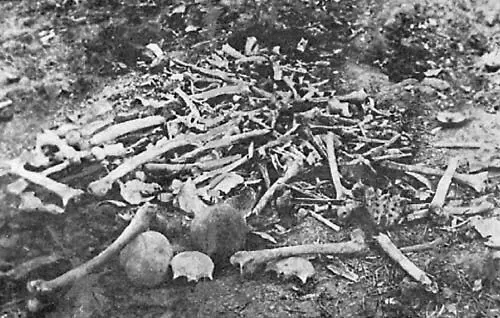
△被屠杀的亚美尼亚人的骸骨
这一天成为了“亚美尼亚大屠杀”纪念日。
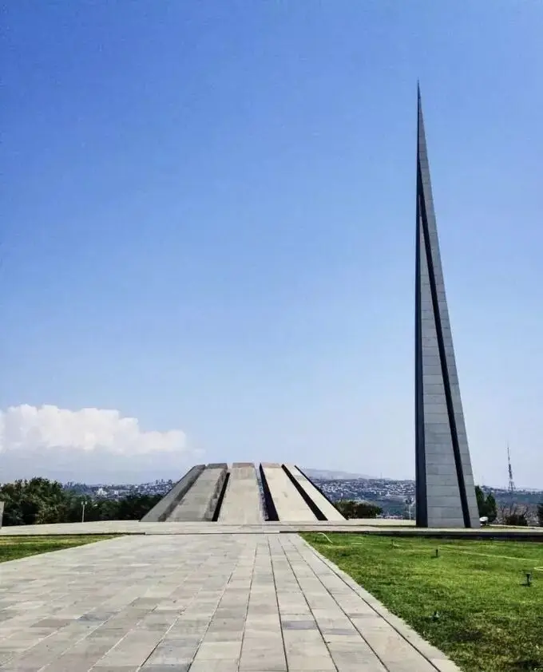
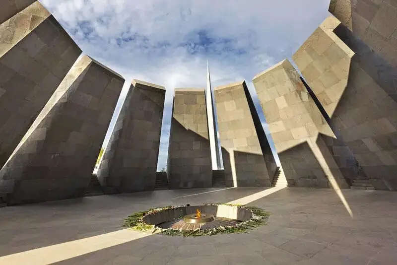
△亚美尼亚屠杀纪念碑，高耸入天际的尖角纪念碑与后面十二块水泥板组成如花瓣般遮挡着中间的长明火
没有了精英，亚美尼亚就失去了方向和判断力。
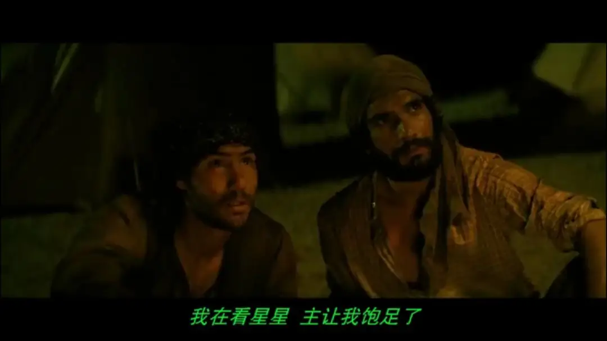
紧接着被迫害的就是奥斯曼军队中的亚美尼亚军人，他们被甄别、隔离，然后被屠戮。
就这样亚美尼亚人失去了能够武装反抗的力量。
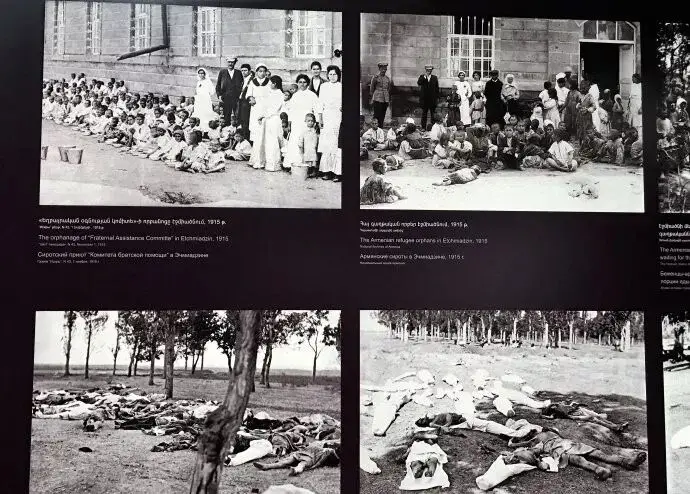
接着，亚美尼亚人中的男性被“征兵”入伍，虽说的是要上战场对付敌人，却没有给他们分发武器。
而是去到一些地方做苦力，并且没有足够的粮食供给。
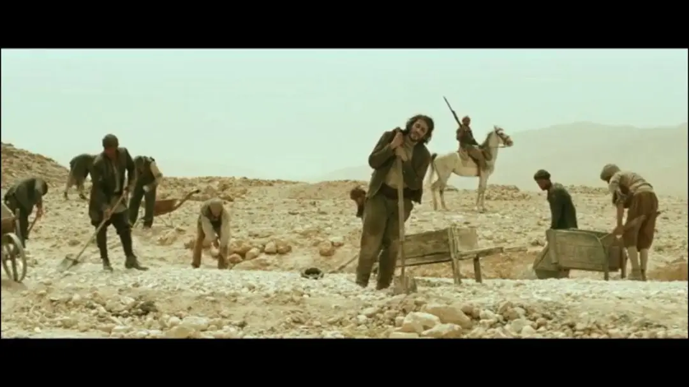
这样，很多亚美尼亚人要么饿死，要么病死。
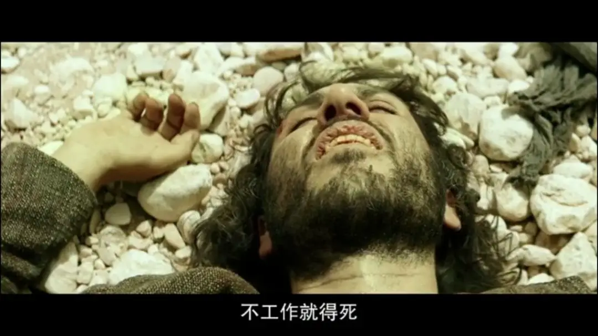
剩下的人，在刽子手的枪口下，亲手挖掘了埋葬自己的坟墓，随着一声枪声便永远长眠地下。
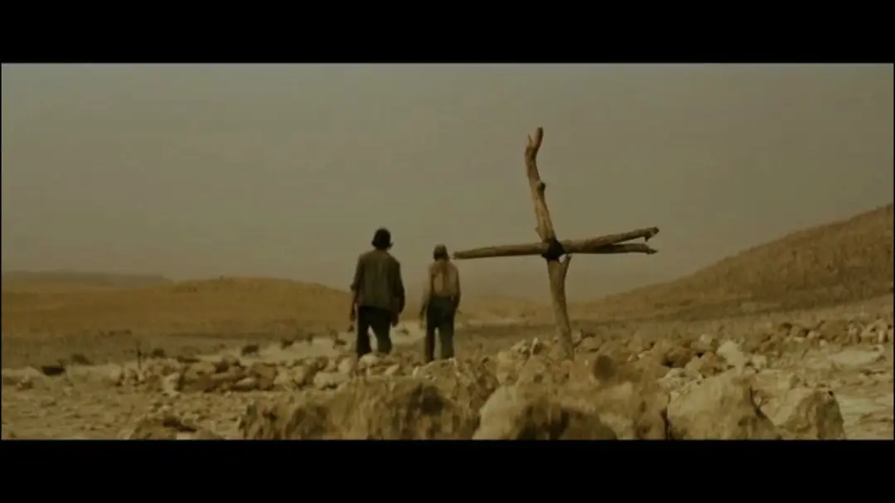
亚美尼亚男性被迫害后，奥斯曼政府颁发法律，要求亚美尼亚人所有财产充公。
并且对剩下的妇孺进行驱逐，要把她们押送到叙利亚和美索不达米亚的沙漠地带。
于是近100万的亚美尼亚人踏上了死亡之旅。
指挥官告诉部下“可以（对那些女人）为所欲为”。
因此，很多年轻的亚美尼亚妇女被强暴，并成为士兵的牟利工具，被当成性奴被贩卖。
无数婴儿则被活活摔死，更多人被吊死、枪杀。
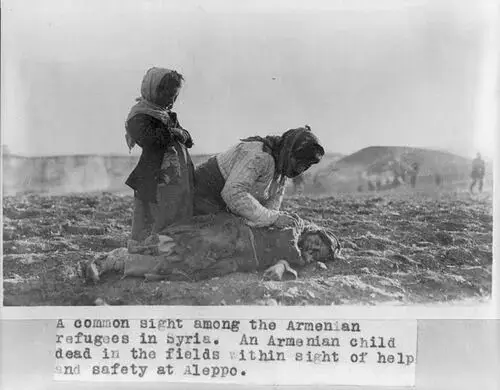
△一个亚美尼亚妇女跪在死去孩子的旁边
更有甚者，全村人被集合在一处，然后被烧死。
到处都是绝望的哭喊声。
很多穆斯林告诉亚美尼亚妇女，如果她们愿意嫁给穆斯林，改宗伊斯兰，便可免于被驱逐。
这样屈辱性的要求被亚美尼亚人拒绝，即使是有少数人答应，却依旧免不了被驱逐。
而在驱逐的路上，无水无粮。
绝大多数人死于饥饿和疾病。
流徒者的尸体遍布道路和幼发拉底河。
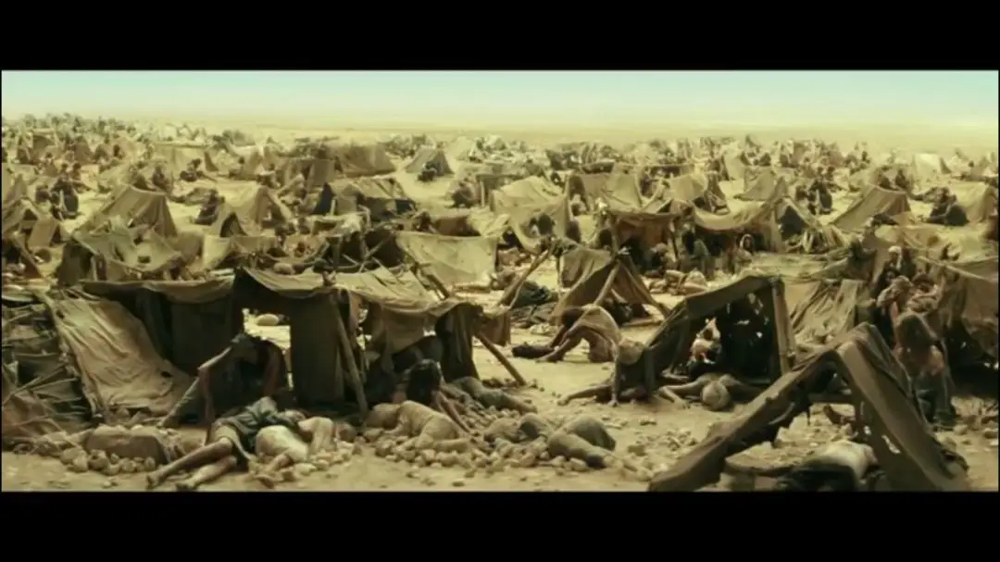
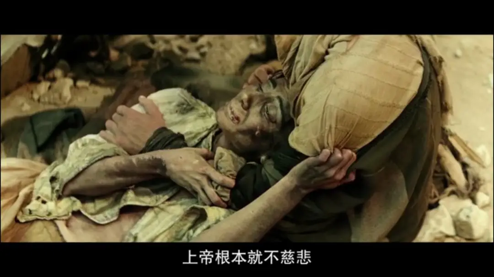
就这样，当时200万亚美尼亚人，被屠杀了150万人。
这几乎是灭顶之灾！
时任美国驻奥斯曼土耳其大使的亨利·摩根索，在回忆录中描述这场悲剧时写道：
“我确信，在种族遏制的整个历史上，再没有如此可怕的情节。以往历史上发生过的大规模屠杀和残害，与1915年亚美尼亚族人的遭遇相比，都显得微不足道。”
流亡美国的女孩Mardiganian根据自己遭遇的可怕经历写了一本书，叫做《Auction of Souls》（译作：灵魂拍卖）。
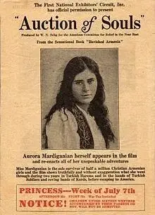
这本书引起了美国社会对亚美尼亚大屠杀的关注，1919年，根据Mardiganian小说改编的同名电影上映。
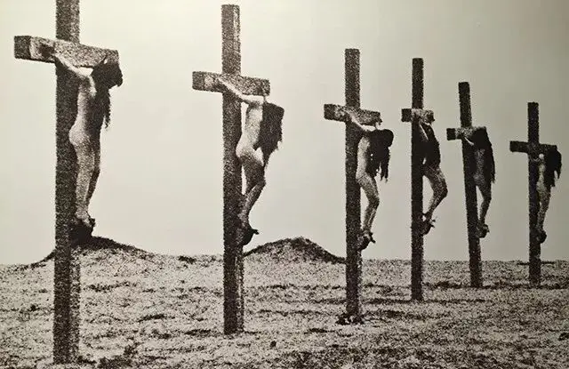
朋友圈流传的图片便来自于这部一百年前的作品，这个场景中，亚美尼亚女人像耶稣一样赤身露体被定死在十字架上。
很多人误以为是真实的新闻照片，事实上，这是被“艺术加工”过的情形。
真实的历史太过于残忍，根本不适合用画面表现。
Mardiganian曾透露：
土耳其人并没有那样做，他们做了一些小尖头十字架。
在强奸完亚美尼亚女孩后，他们强迫她们坐在尖头的十字架上。
就这样，尖尖的木头穿过女人下体，致使女人在惨痛中死去。
这就是他们杀死这些女孩的方式 ，电影用“更文明”方式展现了这些暴行，因为电影实在无法表现出如此可怕的东西。”
很可悲的是，当时正处于一战期间，世界无暇关注到悲惨的亚美尼亚人。
除了一些新闻报道和协约国的谴责，并没有其他实质性的举措。
一战结束后的《巴黎和会》上，与会各国再次强烈谴责土耳其的罪行，迫于国际压力，土耳其法院审判了大屠杀的肇事者，并提供了一份超过130个疑犯的报告。
根据相关条约，罪犯要被国际同盟审判。
之后多位奥斯曼政客、将领、知识分子被移送到马耳他，接受相关调查。
可这些人最终又被送回土耳其，成为释放被土耳其新政府扣留的英国公民的交换条件。
于是，国际审判没有了踪影。
土耳其政府之后也失口否认了这场种族屠杀，认为“亚美尼亚人作为一个文化上的群体，可能会同情俄国而构成威胁（对奥斯曼土耳其），杀死他们是合理的”。
这让亚美尼亚人非常愤怒，他们开始在国际上竭力呼吁世界要关注这场大屠杀，要给死难者一个说法。
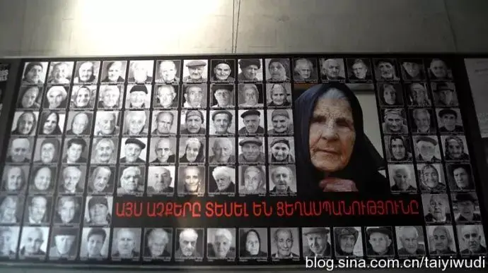
可真实的历史中，正义往往是迟到的，甚至是不完全的。
直到近百年后的1998年4月24日，欧洲委员会才通过决议，指出亚美尼亚大屠杀是反人类罪行，是发生在20世纪的第一场种族屠杀，全世界当纪念那些亚美尼亚受害者。
2011年，法国国民议会通过将“否认亚美尼亚种族灭绝”列为刑事罪行的法案。
2016年，德国联邦议院通过决议，认定奥斯曼土耳其帝国在1915年对亚美尼亚人进行了种族屠杀。
截止到目前，有二十多个国家（大都为西欧国家）承认了这场大屠杀。
但这些国家中没有土耳其！
无怪乎，希特勒通过亚美尼亚人的遭遇会认定他自己的罪恶会被世界遗忘。
事实的确如此。
可“不巧”的是，希特勒遇到的却是个特例。
犹太人的大屠杀记忆不仅没有被遗忘，而且被深深地烙在了全世界人的记忆中了。
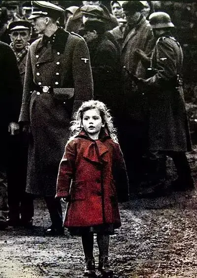
这主要有两个原因。
一是犹太人以多种形式将“大屠杀灾难记忆”固化。
作为经历了恐怖之事的幸存者，有些人愿意诉说苦难故事，但却没有多少人愿意聆听那些惨绝人寰的故事。
再加上幸存者也想重新开始新的生活，也不会常常揭开过去的伤疤。
所以，这些记忆很容易消失在时间的长河中。
而以色列直接通过了《大屠杀与英雄主义纪念日》的法令，以法律的形式规定犹太人必须要纪念那些悲痛。
不仅如此，犹太人广泛收集了幸存者的资料，以极为详尽的方式向后人呈现了那些恐怖之事。
自上世纪80年代末，以色列每年举行“波兰之行”，那些真实可怕的集中营让每一个参观者触目惊心。
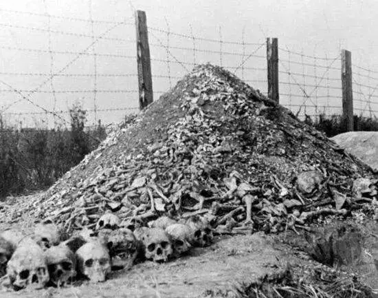
就这样，大屠杀记忆以一种非常具体、鲜活而非宽泛的形态存在每一个犹太人的记忆中。
第二个原因就是德国自己承认了自己的暴行。
这是最重要的原因，从德国总理的下跪，到大量优秀反思纳粹行径的文学作品、电影，一次又一次地引起全世界对于那场灾难的反思。
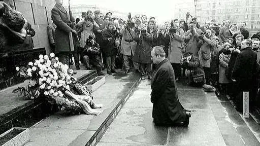
所以，对于犹太人被迫害的记忆比全世界任何一次类似的暴行更深入人心。
从这方面来说，犹太人还是“幸运”的，遇到了有着忏悔精神的德国。
你可以想一想，如今有谁还真正记得南京大屠杀、红色高棉、卢旺达大屠杀、印尼黑色五月......
那些暴徒像土耳其一样，很多至今依旧不承认罪行，依旧逍遥法外！
历史需要真相，真相需要敬畏，敬畏出自于那可以让人真正认识自己有多败坏的信仰。
历史也需要和解，因为仇恨就像病毒一样依附在宗教、贫富差距、种族、阶层的各个地方，准备随时暴走吞噬其他无辜人的血以不断繁衍。
可那能够产生敬畏、能够消弭仇恨的力量又来自何处？
我忽然想到了《独立宣言》中那段宝贵的话：
我们认为下述真理是不言而喻的：
人人生而平等，造物主赋予他们若干不可剥夺的权利，其中包括生命、自由以及追求幸福的权利……
如果遇有任何一种形式的政府变成是损害这些目的的，那么，人民就有权利改变或废除它……
愿造物主亲自安慰亚美尼亚人。
申冤在他，他必报应。
-END-
关于亚美尼亚及大屠杀，为大家整理了一个资源包。
大家可在后台回复亚美尼亚 获取资源。
资源列表：
《被遗忘的祖先的影子》
《石榴的颜色》
《亚美尼亚大屠杀》（PBS纪录片只有英文字幕）
《灵魂拍卖》
《切肤之歌》
《BBC 悲愤呐喊》（只有英文字幕）
▼
（点击图片即可获取全文）

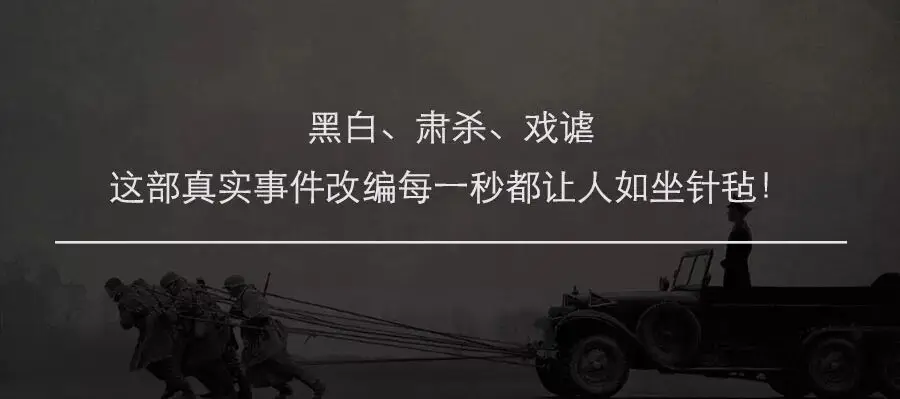
这里没有挑逗你眼目情欲的小鲜肉
也没有挑动你肉体情欲的段子
更没有膨胀你今生骄傲的鸡血
我们只在乎那些最质朴真诚的作品
在那里我们才能恢复真正的想象力
我们也坚信这才是我们真正需要的

ID:Six_hundred_hits
长按二维码，一键关注
【六百击】
电影评论
尽情分享朋友圈

微信二维码打赏通道
小提示：文末广告是腾讯配送广告，内容与本号无关，但您的每次点击（无需反复点）都会给平台带来几毛收益，欢迎您点击支持六百击。